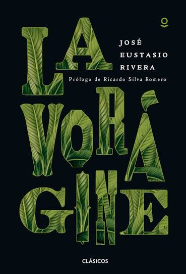

Literatura y violencia
"Hice lo que tenía que hacer. Él se jugaba su vida, yo la mía. Pero yo no quiero ser un asesino..." - Hernando Téllez
1. Análisis Literario e Histórico
Como pieza literaria: "Espuma y nada más" de Hernando Téllez es una obra maestra de la narrativa breve. Construye una tensión psicológica impecable dentro de un espacio reducido y cotidiano: una barbería. A través del monólogo interior del barbero, la navaja se convierte en el centro del suspense, representando el delgado filo entre la vida y la muerte, la venganza y la ética profesional.
Como retrato de un momento histórico: El cuento sintetiza con precisión el clima de La Violencia bipartidista en la Colombia de mediados del siglo XX. El Capitán Torres representa el poder estatal represivo y sanguinario, mientras que el barbero encarna al ciudadano del común atrapado en la clandestinidad, la polarización y el miedo. El relato demuestra que la violencia de nuestro país no solo se libró en los campos con armas, sino en la conciencia, en el dilema moral de individuos comunes expuestos a la barbarie. La frase final del capitán ("Me habían dicho que usted me mataría. Vine para comprobarlo. Pero matar no es fácil") evidencia cómo la violencia redujo la interacción humana a un juego frío de sombras y desconfianza.
2. El Futuro de la Lectura en Colombia
No considero que la lectura, la literatura o los libros vayan a convertirse en cosas del pasado, pero sí sostengo que su formato y nuestra relación con ellos están cambiando. Como integrante de una generación hiperconectada y digital, veo que no leemos menos, sino de forma distinta: consumimos información constantemente a través de pantallas, artículos digitales, blogs y plataformas interactivas.
El reto actual no es la desaparición del libro, sino la velocidad y la dispersión. La literatura tiene algo que los algoritmos de respuesta rápida no pueden reemplazar: la capacidad de ejercitar la empatía, el pensamiento crítico y la contemplación profunda. Leer literatura nos obliga a ponernos en los zapatos del otro y a procesar realidades complejas. Mientras como sociedad necesitemos entender nuestro pasado, nuestras contradicciones y nuestras emociones, la narrativa escrita seguirá viva, ya sea en papel, en lectores digitales o en bitácoras virtuales como esta.
3. Recomendación Literaria

José Eustasio Rivera (Neiva, 1888 - Nueva York, 1928)
Obra emblemática: La Vorágine (1924)
Recomiendo de manera enfática a José Eustasio Rivera porque su obra es indispensable para comprender la Colombia territorial, salvaje y olvidada por el poder central. En La Vorágine, Rivera no solo relata una historia de pasión y fuga a través de Arturo Cova, sino que hace una denuncia visceral sobre la explotación humana y ambiental durante la fiebre del caucho en la Amazonía y la Orinoquía colombiana.
Su aporte a la comprensión del país es colosal por tres razones:
1.Denuncia social y humana: Visibilizó la esclavitud, la tortura y la masacre a la que fueron sometidos las comunidades indígenas y los colonos por parte de las casas caucheras en la selva.
2. La naturaleza como personaje: Presenta a la selva no como un paisaje idílico, sino como un ente vivo, voraz y devorador ("Antes que me hubiera apasionado por mujer alguna, jugué mi corazón al azar y me lo ganó la Violencia"), mostrando la desconexión del Estado central con las fronteras del país.
3. Memoria histórica e identidad: Rivera combinó su talento poético con su experiencia real como abogado en la delimitación de fronteras, dejando un testimonio literario que sienta las bases para reflexionar sobre la explotación de los recursos naturales y la presencia del Estado en las regiones periféricas.